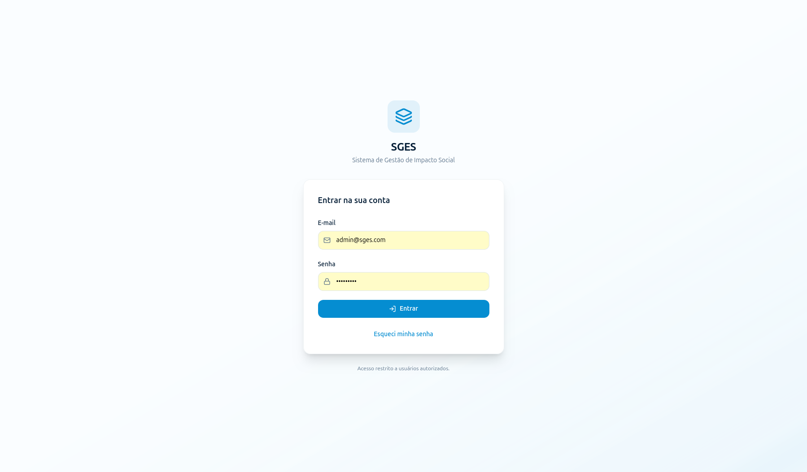
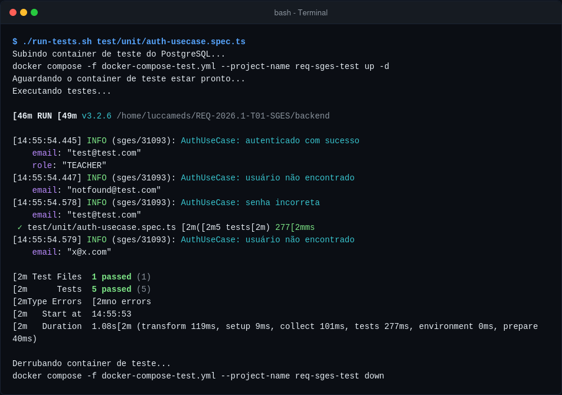

SGES¶
Checklist de DoR e DoD: CSU01 (RF01) - Autenticar usuário¶
Este checklist serve como instrumento para guiar e validar a evolução deste caso de uso através do ciclo de desenvolvimento, em conformidade com o documento geral de DoR e DoD do projeto.
1. Definition of Ready (DoR)¶
Para que o requisito correspondente a este caso de uso seja considerado Ready (Pronto) e apto para entrar na sprint de desenvolvimento, todos os itens abaixo devem estar marcados:
- [x] Caso de Uso: O requisito está detalhado em sua especificação (fluxo.md)?
- [x] Critérios de Aceitação: Os critérios de aceitação foram descritos com clareza no arquivo de especificação do caso de uso e na lista de requisitos?
- [x] Abstração: O requisito está no mesmo grau de maturidade e detalhamento dos demais?
- [x] Estimativa: O requisito foi estimado pela equipe de desenvolvimento?
- [x] Entrega de Valor: O caso de uso agrega valor real ao negócio e está associado a um objetivo do projeto?
- [x] Dependências Mapeadas: Todas as dependências externas e internas foram identificadas e resolvidas?
Interface do Usuário (DoR)¶

2. Definition of Done (DoD)¶
Para que este caso de uso seja considerado Done (Concluído) e sua entrega seja aceita, todas as condições abaixo devem ser atendidas e marcadas:
2.1. Entrega de Valor¶
- [x] O trabalho realizado entrega um incremento funcional e observável no produto de software?
- [x] A entrega está devidamente rastreada e referenciada ao caso de uso
CSU01no sistema de controle de versão (ex: nos commits/PRs)?
2.2. Cobertura dos Requisitos¶
- [x] Todos os cenários descritos nos critérios de aceitação (fluxo básico, alternativos e exceções) foram implementados e testados?
- [x] O comportamento do sistema em situações normais e de falha foi validado?
2.3. Qualidade de Testes¶
- [x] Foram implementados testes unitários para cobrir as regras de negócio deste caso de uso?
- Comando para execução dos testes:
# No diretório /backend: ./run-tests.sh test/unit/auth-usecase.spec.ts - Evidência de Execução:

- Comando para execução dos testes:
- [x] Os fluxos principais foram validados manualmente em ambiente de testes pela equipe ou QA?
2.4. Revisão por Pares (Code Review)¶
- [x] O Pull Request (PR) foi revisado e aprovado por pelo menos mais um integrante da equipe?
- [x] O código passou nas validações de conformidade de estilo, legibilidade, robustez lógica e de segurança (sem vazamento de credenciais ou dados sensíveis)?
2.5. Documentação¶
- [x] A documentação técnica, de APIs (Swagger/OpenAPI) e este próprio repositório de requisitos foram atualizados com as alterações finais?